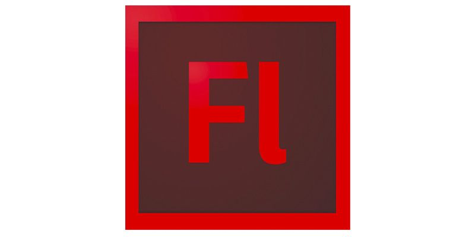

Adobe Flash (dawniej Macromedia Flash) – program komputerowy, technologia tworzenia animacji z wykorzystaniem grafiki wektorowej na zasadzie klatek kluczowych. Powstałe pliki .swf, zwane często „plikami Flash”, można odtwarzać na stronie www za pomocą przeglądarki internetowej z zainstalowaną odpowiednią wtyczką (np. Adobe Flash Player) lub w oddzielnym programie do tego przeznaczonym. Od wersji Flash 5 program wyposażony został w język programowania do obsługi zdarzeń (np. kliknięcie elementu myszą) – ActionScript. Dzięki temu we Flashu można tworzyć interaktywne animacje i programy, np. popularne w sieci WWW gry Flash. Oprócz tego pliki Flash są wykorzystywane do internetowych reklam i prezentacji. Istnieją również strony internetowe całkowicie oparte na plikach Flash.
Zmiany wprowadzone w wersji Flash MX 2004 (w szczególności ActionScript 2) czynią z niego środowisko programistyczne. Macromedia na technologii Flash opierała również inne swoje produkty, takie jak Adobe Breeze czy FlashPaper.